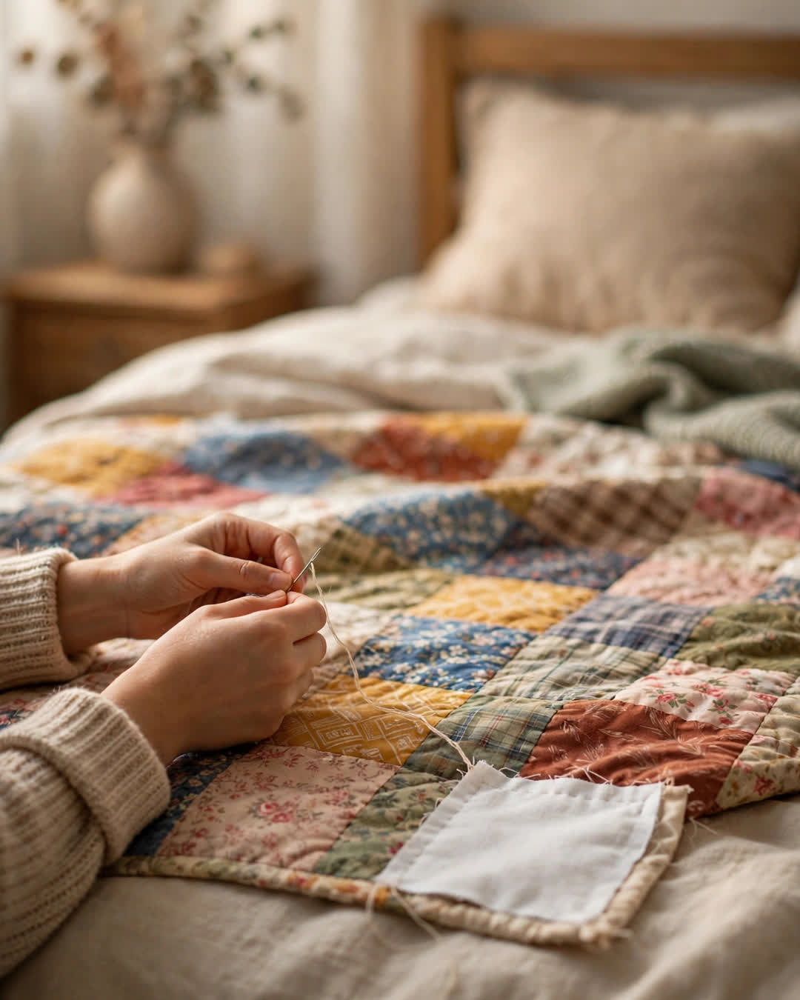

The Quilt
A Clipp Kaili original story

There are twenty-three squares in my grandmother's quilt, and every single one of them is a year of our family's life.
Grandma Edith started it the winter she married Grandpa, with a square cut from her mother's housedress — pale blue, worn soft as breath. After that, a square a year, always in January, always chosen by her alone. The red plaid is 1974, from my uncle's first flannel shirt. The yellow with the tiny ducks is the year my mother was born — a piece of her receiving blanket. The dark green is from the curtains of the house they lost in the fire and rebuilt, because Grandma said a quilt that only kept the happy years would be lying, and she refused to sleep under a lie.
There is a square from my father's work shirt the year he finally got sober. There is one from the dress I wore to my first dance. There is a square of plain, proud denim from the jeans Grandpa wore the day he finished building the porch with his own hands at sixty-eight.
You could lay that quilt out on a bed and read our family like a book — the whole story, joy and wreckage, color by color.
But the corner square was never finished.
For as long as I can remember, that last square was just batting and a border — an empty space in the bottom corner, neatly edged, obviously intentional. I asked about it every childhood visit. Every time, Grandma gave me the same answer, with her needle never slowing down:
"That one's not mine to finish."
I assumed it was superstition. I assumed it was a flaw she'd made peace with. I grew up, moved away, and mostly stopped asking. Then Grandma passed last spring, ninety-three years old, sharp as a tack to the last week — and at the reading of her things, the quilt came to me, folded in tissue, with a note pinned to the empty corner in her hand:
"The last square is for the next baby. Whoever she is, whoever he is — when the next child comes into this family, take something soft that belonged to them in their first days, and sew it here. Not before. A family that finishes everything has forgotten how to expect anything. Leave room. Love always leaves room for one more."
I was eight weeks pregnant when I read that note. I hadn't told a soul yet — not my mother, not even, in any way that felt real, myself. I sat on Grandma's porch with that quilt in my lap and cried like a child, because the most careful woman I ever knew had left a blank space in her life's work on purpose — not in grief, not in doubt, but in hope — for a baby she would never meet, whose name she never asked to know.
My daughter was born in February.
Yesterday, with my mother holding her and my aunt holding the quilt flat across the bed, I sewed the last square in myself. It is not the straightest stitching in that quilt, and Grandma would have had comments. It's cut from my daughter's first blanket — white, with one small, stubborn yellow star.
Twenty-four squares now. A whole family, corner to corner.
And on the new blanket I'm starting for my daughter — just learning, slow as anything — I've left the corner open.
Some women leave their grandchildren money.
Mine left me an empty square, and instructions to believe the story isn't over.
This story is a work of fiction, written to touch hearts and bring families closer.
← Back to all stories